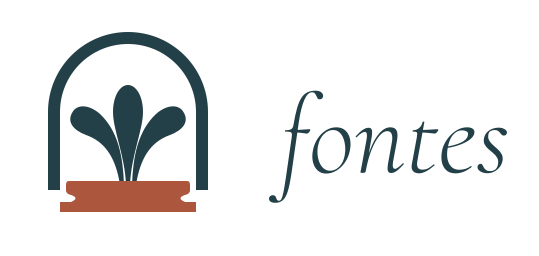
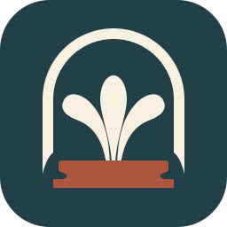

An enduring source
A well to return to.
An arch, three rising streams, and a clay basin. A quiet emblem for reading deeply and returning often.

Primary identity · outlined literary wordmark
App icon · deep teal, ivory and clay64322416
One silhouette, tested at small sizes
Deep teal · #233F47
Ivory · #F7F0E0
Clay · #AC563D


These are editable SVG masters. Wordmark lettering is outlined from our bundled Cormorant Garamond Italic. App icons are generated from these masters; Android includes separate adaptive background, foreground and monochrome layers. Device launcher presentation still depends on its selected mask and icon theme.